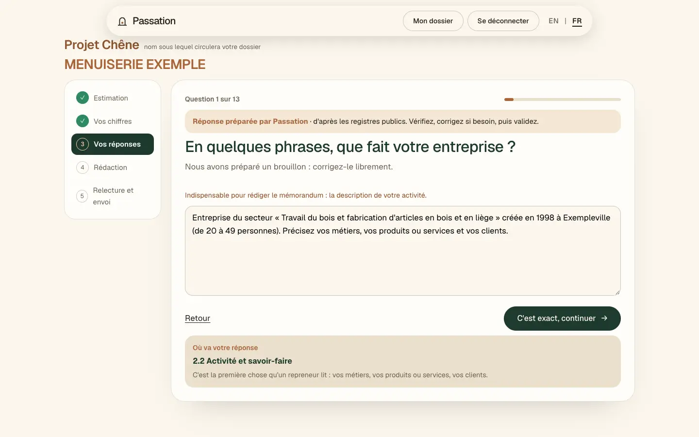
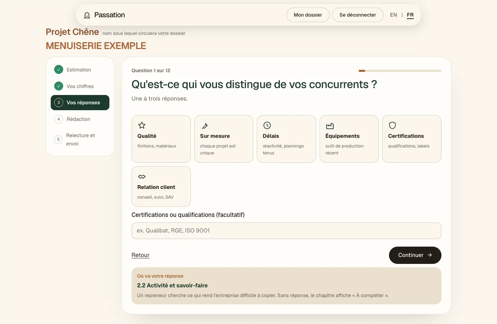
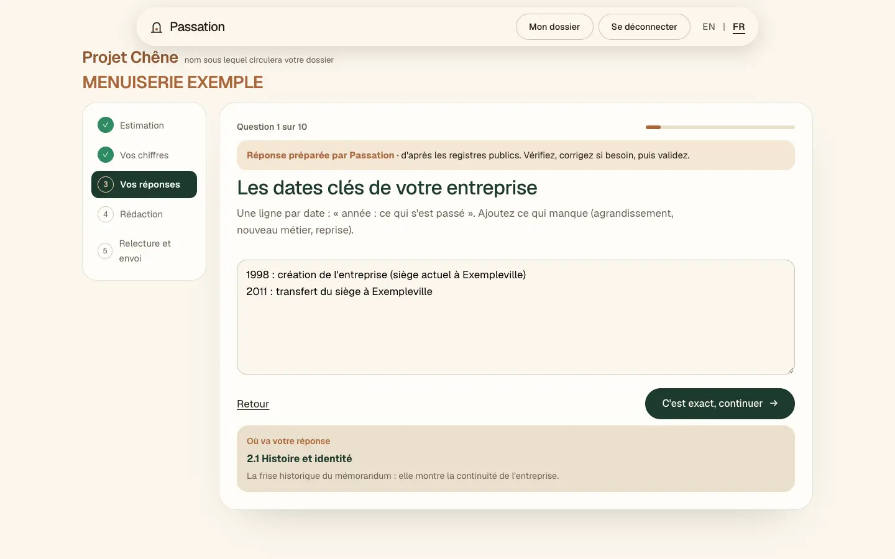
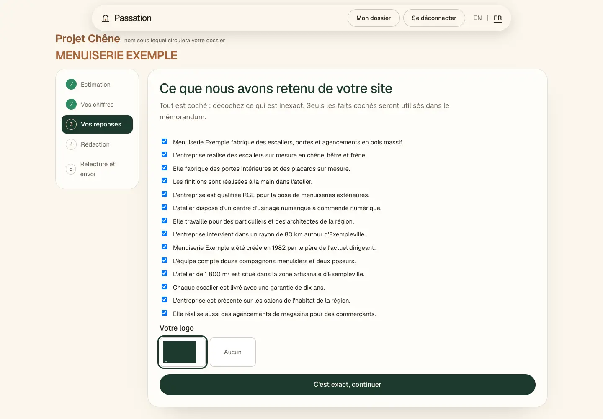
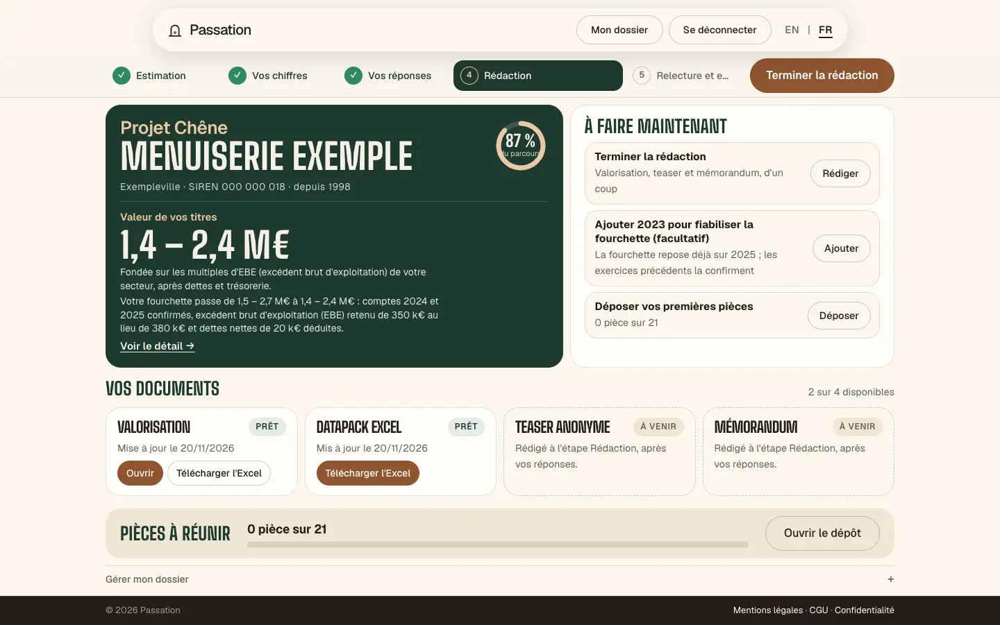
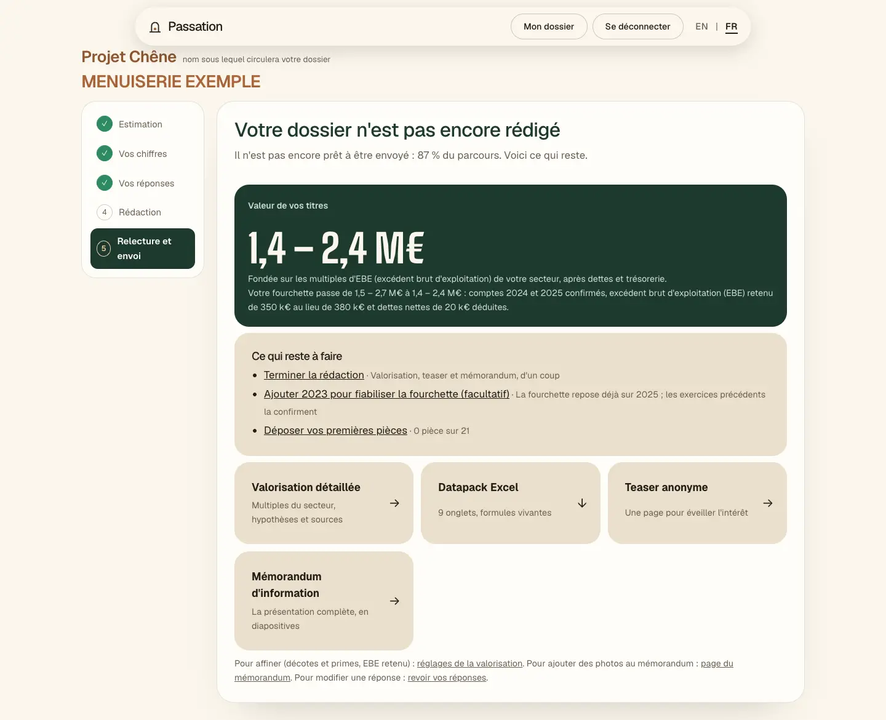

Pull Request « Parcours d'analyse : plus guidé, plus précis, photos du site dans le mémorandum » · phase 1 (brouillon) · 20/11/2026
Options à choisir
Pour chaque écran, deux ou trois options. Celle que je recommande est encadrée en cuivre, et c'est elle que montrent les maquettes « après ». Toutes les données sont fictives (Projet Chêne, Menuiserie Exemple, chiffres inventés). Les maquettes sont des pages statiques : les curseurs, la limite de trois réponses et les photos réagissent au clic, mais rien n'est enregistré.
Photos : trouvées, mais jamais proposées dans le parcours.La lecture du site garde jusqu'à 12 images (photos_candidates), sans filtre de taille ni de forme. Elles ne sont proposées que sur la page du mémorandum, et il faut cocher la case de droits avant de cliquer une photo, sinon rien ne se passe. Le parcours guidé ne les montre pas.
Logo de l'entreprise : enregistré, mais absent du mémorandum.Le logo choisi est stocké, mais la couverture et les pieds de page n'affichent que le logo Passation (public/js/memo.js, fonction logoPassation). À corriger en phase 2.
« Une à trois réponses » n'est appliqué nulle part.L'aide le dit, mais l'écran accepte les 6 choix. La proposition du serveur en coche 3 au plus, d'après les faits du site. Les six choix cochés que vous avez vus viennent donc probablement d'une réponse déjà enregistrée, par exemple depuis le questionnaire complet. Je ne l'ai pas reproduit : ce sera fait en phase 2, avec un test.
Libellé d'activité : c'est déjà la division NAF.Le brouillon utilise secteurDe (division NAF, comme le teaser). « Commerce et réparation d'automobiles et de motocycles » est justement le libellé de la division 45 : il reste trop large pour un garage. Le libellé de la section n'est utilisé que pour l'étude de marché. Voir l'option C2 ci-dessous.
47 points contre 51 : une seule fonction, deux lectures.La page du dossier et l'écran final comptent déjà avec la même fonction (pointsACompleter). L'écart ne vient donc pas du calcul, mais des données lues : mon hypothèse est que le mémorandum est relu à deux moments différents (pendant et après la rédaction des chapitres). Je ne l'ai pas encore reproduit : ce sera fait en phase 2, avec un test qui compare les deux écrans sur le même dossier.
Captures « avant »
Faites en local le 20/11/2026 sur le dossier fictif, en 1440 et 390 px, en français et en anglais. Toutes les captures sont dans captures/.

Activité : texte libre, brouillon des registres, pleine largeur.

Distinctions : grandes tuiles, sans limite de trois.

Dates clés : « une ligne par date » dans un champ de texte.

Site : 14 phrases cochées, ni thème ni contrôle, aucune photo.

Dossier : fil tronqué (« Relecture et e… »), tâche facultative en action principale.

Écran final : quatre tuiles de même poids.
A. Entrée et gabarit du parcours
Un écran d'accueil avant la première question, puis le même gabarit pour tous les écrans : colonne de 720 px, une question, progression fine en haut, un seul bouton principal, « Où va votre réponse » sur une ligne.
A1. Accueil en trois étapes numérotées, fil à gauche en points
Recommandée. Trois lignes sobres séparées par des traits fins, pas de cartes. Le fil à gauche devient une liste de points (pas de gros bloc) ; sur téléphone, une barre de 5 segments. Maquette.
A2. Accueil plein écran sur fond vert
On démarre l'analyse approfondie 1 · 2 · 3 Commencer
Plus « affiche » et plus entraînant, mais il casse la continuité avec les écrans suivants (crème) et rappelle les grands blocs verts qu'on veut alléger.
A3. Pas d'écran d'accueil : un bandeau au-dessus de la 1re question
Analyse approfondie · 3 étapes · 20 min
Déposez votre liasse
zone de dépôt
Un clic de moins, mais on perd le moment « on démarre » demandé, et le bandeau s'ajoute à un écran déjà chargé.
En-tête : nom de code et nom sur une ligne, dans la barre
Passation │ Projet Chêne · Menuiserie Exemple
Recommandée. Taille du texte courant, en espresso. Même ligne sur la page du dossier, où le grand bloc vert garde seul le nom en affiche.
En-tête au-dessus de la colonne, petit et gris
Projet ChêneMENUISERIE EXEMPLE (14 px)
Garde la place actuelle, en plus discret. Prend une ligne de hauteur sur chaque écran.
Nom de code seul, nom réel au survol
Projet Chêne ⓘ
Le plus discret, mais le dirigeant ne voit plus le nom de son entreprise en travaillant : moins rassurant.
B. Montants et nombres : champ formaté et curseur
Pour tous les montants du parcours (rémunération, loyers, éléments exceptionnels, comptes saisis) et les nombres (part du premier client, croissance). Le champ affiche « 96 000 € » en français et « €96,000 » en anglais ; la valeur enregistrée reste un nombre brut. Une valeur proposée n'est jamais enregistrée sans action du dirigeant.
B1. Champ à gauche, curseur à droite, repère en dessous
96 000 €
━━━━●──────
Proposé : même montant que votre rémunération. Pas encore enregistré.C'est mon estimation
Recommandée. On tape ou on glisse, les deux restent alignés. La proposition est en italique cuivre tant qu'elle n'est pas confirmée. Maquette.
B2. Curseur seul avec repères, champ au clic
━━━━●────── 96 000 €
│ médiane secteur │ votre valeur
Très rapide pour des ordres de grandeur, mais imprécis pour un montant exact (comptes), et il faut des repères sourcés que nous n'avons pas pour tout.
B3. Champ formaté seul, avec puces rapides
96 000 €
60 k€80 k€100 k€120 k€
Simple et accessible, mais les puces sont des valeurs arbitraires : risque de réponse « au plus proche » plutôt que réelle.
À trancher : d'où vient la position de départ du curseur ? Je propose, dans l'ordre : la donnée publique (comptes INPI) ; sinon une valeur neutre déduite de vos chiffres (rémunération de remplacement = rémunération actuelle, donc aucune correction ; loyer de marché = loyer payé ; part du premier client = vide, curseur au milieu sans valeur enregistrée). Aucune médiane sectorielle n'est inventée ; si vous voulez des repères de rémunération par secteur, il faut une source citée, à ajouter dans src/data/.
C. Moins de questions, des choix à cocher
Chaque question doit permettre d'écrire une phrase précise du mémorandum. Exemple ci-dessous pour « Que fait votre entreprise ? » et pour « Ce qui vous distingue ».
C1. Puces pré-cochées et phrase rédigée sous les yeux
EscaliersPortesParquets+ Autre
ParticuliersArchitectes
« Menuiserie Exemple conçoit et fabrique… »
Recommandée. Les métiers sont pré-cochés depuis les faits du site (point cuivre = « lu sur votre site ») et le code NAF ; la phrase se met à jour à chaque coche, sans appel à Claude (simple assemblage). Une précision libre reste possible, repliée. Maquette.
C2. Comme C1, avec le libellé NAF le plus fin
Code 16.23Z : « Fabrication de charpentes et d'autres menuiseries »
EscaliersPortes
Remplace le libellé de division (« Travail du bois… », « Commerce et réparation d'automobiles… ») par celui de la sous-classe. Il faut ajouter la nomenclature NAF officielle de l'INSEE dans src/data/ (≈ 730 libellés, avec la source et la date), en français et en anglais. Peut se cumuler avec C1.
C3. Garder le texte libre, avec des puces d'aide au-dessus
EscaliersPortes
texte libre…
Le moins de changement, mais la qualité reste celle de ce que le dirigeant tape : c'est le point qu'on veut corriger.
Distinctions : grille de 3 colonnes, icône fine, 3 au plus
☆ Qualité✎ Sur mesure◷ Délais
▤ Équipements ✓⛉ Certifications ✓⇄ Relation
2 sur 3 au plus
Recommandée. Icône de 18 px au trait fin, coche ronde à droite. Au troisième choix, les autres se grisent (il faut en décocher un). Seuls les choix appuyés par un fait du site sont pré-cochés, avec l'étiquette « lu sur votre site ». Maquette.
Distinctions : classement de 1 à 3
1. Équipements2. Certifications3. …
Donne un ordre utile à la rédaction (le 1er devient le premier point fort), mais demande un geste de plus et passe mal au clavier sur téléphone.
Distinctions : puces sans icône
ÉquipementsCertificationsQualité
Le plus compact, mais vous avez dit aimer les icônes sur les choix à cocher.
Questions avant / après (option recommandée : 14 écrans → 10)
#
Avant (14 écrans, 28 champs)
Après
Section du mémorandum nourrie
1
Site internet
Site internet (inchangé), suivi de deux écrans de validation : « Ce que nous avons retenu » et « Votre logo et vos photos »
Toutes (faits sourcés), couverture (logo, photos)
2
Que fait votre entreprise ? (texte libre)
Que fait votre entreprise ? Puces métiers + types de clients (type de clientèle déplacé ici), phrase proposée, précision facultative
2.2 Activité et savoir-faire ; 3.3 Clients ; synthèse
3
Ce qui vous distingue (6 tuiles) + certifications (texte)
Ce qui vous distingue, 1 à 3 + certifications en puces
Équipe : encadrement, votre rôle. L'ancienneté passe dans « Pour aller plus loin »
2.3 Organisation et équipe
6
Vos clients : type, part du 1er client, zone, régions + Vos cinq premiers clients (écran séparé)
Vos clients : part du 1er client (curseur %), zone. Les régions sont pré-remplies (région du siège) ; les 5 premiers clients deviennent un détail replié, facultatif, sur le même écran
3.3 Clients (concentration, ancienneté)
7
Votre rémunération (2 montants) + Charge ou produit exceptionnel (écran séparé)
« Ce qu'il faut corriger dans vos comptes » : 2 montants (champ + curseur) et oui / non exceptionnel, sur un écran
4.3 EBE retraité ; datapack « Retraitements »
8
Comment détenez-vous les parts ? + À qui appartiennent les murs ? (écran séparé)
« Le périmètre de la cession » : détention et murs sur un écran ; loyers (montants) seulement si les murs sont à vous
5.2 Organigramme juridique ; 4.3 (loyer)
9
Que souhaitez-vous céder, et quand ? + Comment voyez-vous la transmission ? (écran séparé)
« Votre projet de cession » : part cédée (indispensable), calendrier, motif, accompagnement, repreneur souhaité : cinq lignes de puces
5.2 Opération envisagée ; teaser
10
Les 5 prochaines années : croissance (5 puces), axes (6 tuiles)
Croissance en curseur % (pré-placé sur la croissance passée de vos comptes) ; axes : 3 au plus
5.1 Axes de développement ; DCF
Aucune réponse n'est perdue : les champs retirés du parcours restent dans « Pour aller plus loin » et dans le questionnaire complet. Rien n'est supprimé de la base.
Q1. 10 écrans (tableau ci-dessus)
Recommandée. Fusionne les écrans qui parlent de la même chose ; chaque réponse gardée a une section du mémorandum en face.
Q2. 7 écrans
Va plus loin : distinctions dans l'activité, dates clés dans la validation du site, perspectives dans le projet de cession. Plus court, mais certains écrans redeviennent chargés (5 à 7 blocs).
Q3. 13 écrans, mêmes questions en choix à cocher
Garde la liste actuelle et ne change que la forme. Moins de risque, mais ne répond pas à « moins de questions ».
D. Dates clés
D1. Lignes : date, type d'événement, précision
1998Création ▾à Exempleville
· registre national des entreprises
06/2011Transfert ▾…
+ Ajouter une date
Recommandée. Une saisie unique accepte 2016, 03/2016 ou 15/03/2016. Les événements des registres et du BODACC arrivent pré-remplis, avec leur source. Maquette.
D2. Frise horizontale cliquable
1998 ●───── 2011 ●───── + ───── 2026
Plus visuelle, mais difficile au clavier et sur téléphone, et peu lisible au-delà de 6 dates.
D3. Sélecteurs séparés jour / mois / année
—mars2016Reprise ▾
Pas d'erreur de format possible, mais trois listes par ligne : lourd pour un usage où l'année seule suffit le plus souvent.
E. Ce que nous avons retenu de votre site
E1. Contradictions d'abord, puis 4 faits essentiels, le reste replié par thème
À vérifier : créée en 1982 (site) ou 1998 (registres) ?
Fabrique des escaliers…
Atelier de 1 800 m²…
Voir les 9 autres faits
Recommandée. Faits courts, bouton « Retirer » au lieu de cases à décocher. Un fait contredit par les registres n'est pas utilisé tant que le dirigeant n'a pas choisi (ou gardé les deux dates). Maquette.
E2. Quatre colonnes par thème, petites cartes
Activité 3 faitsSavoir-faire 2Clients 3Histoire 2
Tout est visible d'un coup ; mais quatre colonnes de cartes, c'est l'effet « cartes identiques » à éviter, et tout s'empile sur téléphone.
E3. Faits validés un par un (carrousel)
Fait 3 sur 14 « Atelier de 1 800 m² » [Exact] [Faux]
Très clair, mais 14 clics : trop long.
Détection des contradictions (proposition). Code testé, sans IA : on compare les faits du site aux registres sur ce qu'on sait vérifier : année de création, ville du siège, effectif (tranche INSEE), forme juridique. En cas d'écart, le fait est marqué « à vérifier », avec les deux sources, et exclu de la rédaction jusqu'au choix du dirigeant.
F. Logo et photos
F1. Écran dédié juste après les faits du site
Logo trouvé ✓ [Changer]
1 ✓2 ✓3 ✓
···
☐ Ces photos appartiennent à l'entreprise…
Recommandée. Logo présélectionné, photos cliquables (6 au plus, la 1re en couverture), une case de droits pour toute la sélection, « Déposer mes propres photos ». Maquette.
F2. Photos sur l'écran des faits du site
faits…
phphph
Un écran de moins, mais il devient long, et on mélange deux décisions différentes (vérifier des faits, choisir des images).
F3. Choix automatique, modifiable ensuite
Nous avons retenu 3 photos. [Modifier]
Le plus rapide, mais il faudrait cocher la case de droits sans voir les photos : contraire à l'esprit de l'attestation.
Filtre des photos à la lecture du site (proposition, testé sur un HTML fictif). Écartées : SVG, images dont le nom ou la classe évoque un logo, une icône ou un pictogramme ; largeur connue < 600 px ; rapport largeur / hauteur > 3 (bandeaux) ; doublons (même fichier en plusieurs tailles, srcset compris : on garde la plus grande). Gardées en priorité : images du contenu principal, avec un texte alternatif ou un nom de fichier qui évoque l'atelier, les réalisations ou l'équipe. Dans le mémorandum : le logo sur la couverture et en pied de page ; les photos sur la couverture (1re), « Activité » (2e et 3e) et « Équipe » (4e).
G. Page du dossier
G1. Bloc vert + carte d'action unique, documents en une rangée
Projet Chêne MENUISERIE EXEMPLE 1,4 – 2,4 M€
Relire et envoyer →
Facultatif : photos · 4 points
Mémorandum │ Teaser │ Datapack │ Valorisation
Recommandée. Le bouton principal vient d'une règle : la première tâche indispensable, sinon « Relire et envoyer votre dossier ». Les tâches facultatives (2 au plus) sont à part, en petit. Le fil des étapes ne porte plus le bouton, donc plus de libellé tronqué. Maquette.
G2. Une seule colonne étroite
Projet Chêne · 1,4 – 2,4 M€
Relire et envoyer
Documents (liste)
Très lisible, cohérent avec le parcours ; mais la page est plus longue à l'écran d'ordinateur et la valeur perd de sa présence.
G3. Garder la mise en page, réduire le texte
…
À faire (2)
docdocdocdoc
Le moins de changement. Corrige le bouton et la troncature, mais garde quatre blocs de même poids.
H. Écran final du parcours
H1. Mémorandum en vedette avec sa couverture, autres documents en liste
couv.
Mémorandum · 4 points à compléter [Relire →]
PDF Teaser · Prêt
XLSX Datapack · Prêt
WEB Valorisation · Prêt
Pour aller plus loin (facultatif)…
Recommandée. Titre selon l'état réel (« Votre dossier est prêt » ou « Votre dossier est rédigé » + ce qui reste). La nature de chaque document (PDF, Excel, page web) se voit à gauche. Maquette.
Très clair sur ce qui reste, mais les documents ne se voient plus ; moins valorisant après 20 minutes de travail.
H3. Aperçu des quatre documents en vignettes
memoteaserxlsxvalo
Joli, mais on retombe sur quatre blocs de même taille.
Après votre choix
Répondez simplement, par exemple : « A1, B1, C1+C2, Q1, D1, E1, F1, G1, H1 », ou modifiez une option. La phase 2 met en œuvre les options retenues sur cette même branche. Elle ajoute les tests (formatage FR / EN, limite de trois, filtre des photos, contradictions, décompte unique, bouton principal jamais facultatif) et les captures avant / après en anglais et en français. Si la PR devient trop grosse, elle sera découpée : A à F d'abord, puis G et H.